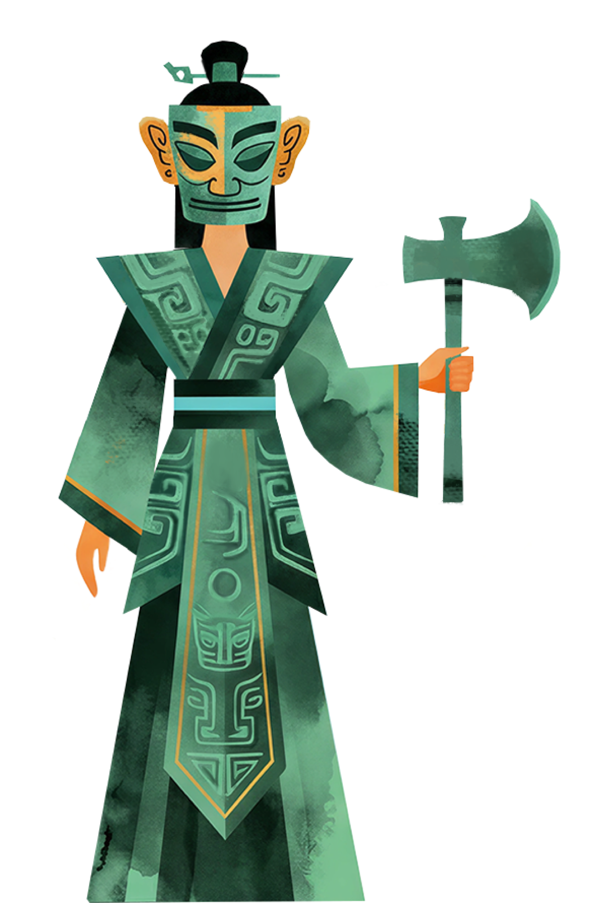
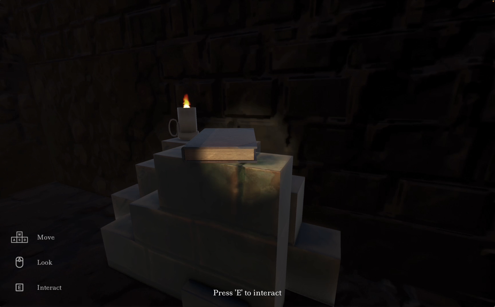
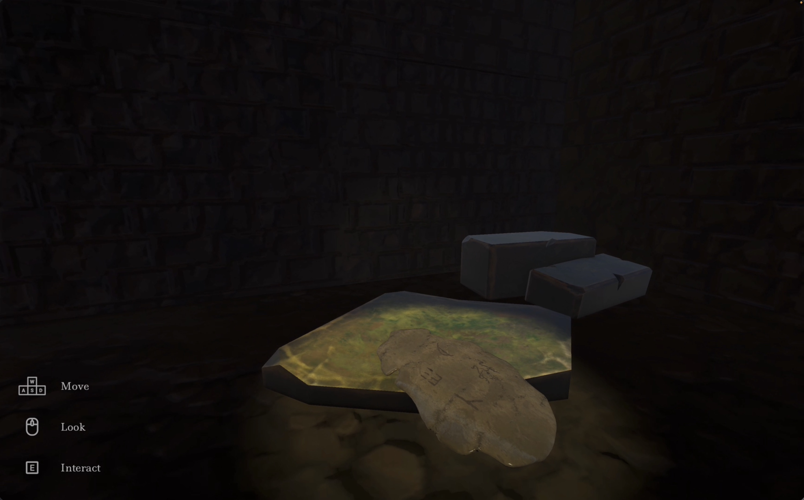
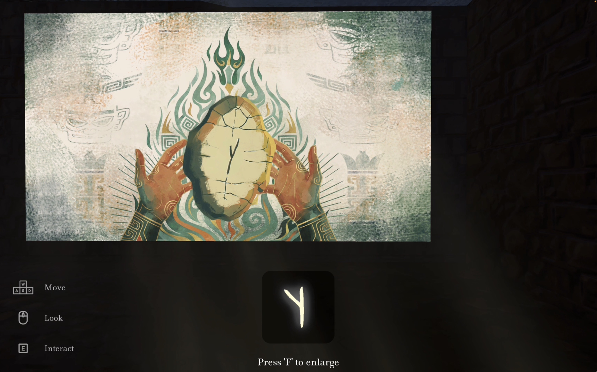
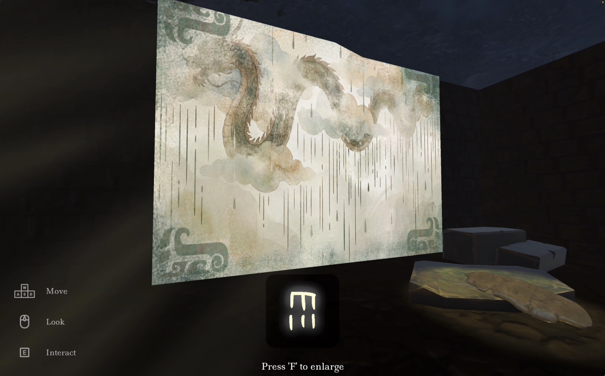
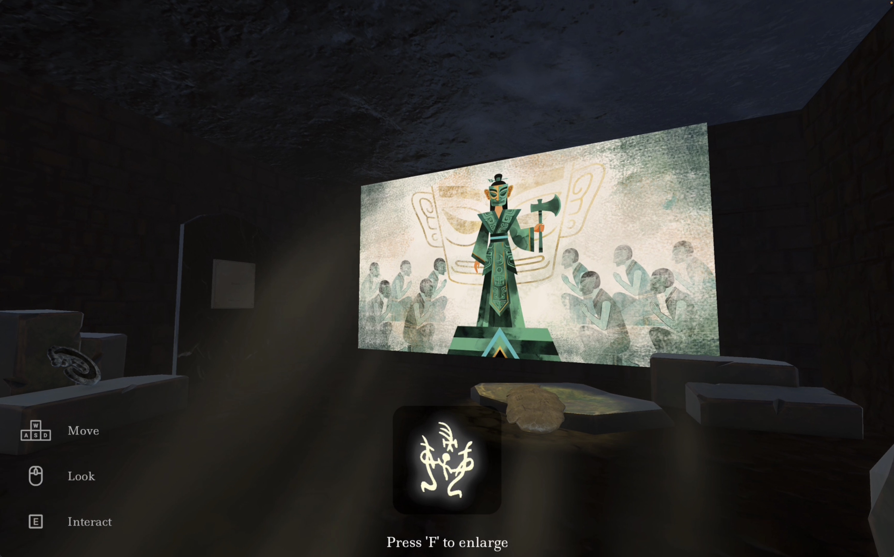
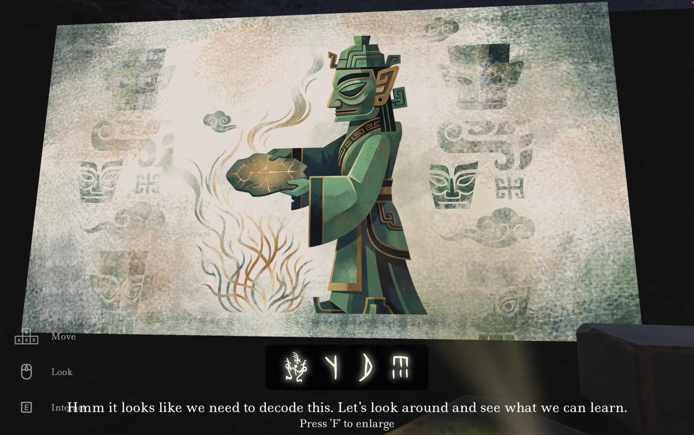

Huijia Huang
Game Design
Oracle Vision is a first-person archaeological puzzle game for learning oracle bone script through cultural heritage exploration.
Players enter the Shang Dynasty tomb of Fu Hao as an archaeologist with the ability to see the memories held by ancient artifacts.
Oracle bone script is the oldest known mature writing system in China. Its pictographic forms preserve visual traces of objects, actions, and ideas, yet they are often taught as isolated symbols. Oracle Vision reconnects those characters with the historical world in which they were created.
Artifacts, mural-like visions, spatial sound, and historical notes turn the tomb into an interpretive learning environment. Rather than relying on recognition and repetition, the game invites players to observe, compare, imagine, and infer.







Oracle Vision was created by an interdisciplinary team at the Georgia Institute of Technology, bringing together cultural heritage research, game and interaction design, 3D environment and asset creation, Unity development, and visual storytelling.
Game Design
Game Developement
UIUX & Art
3D Art